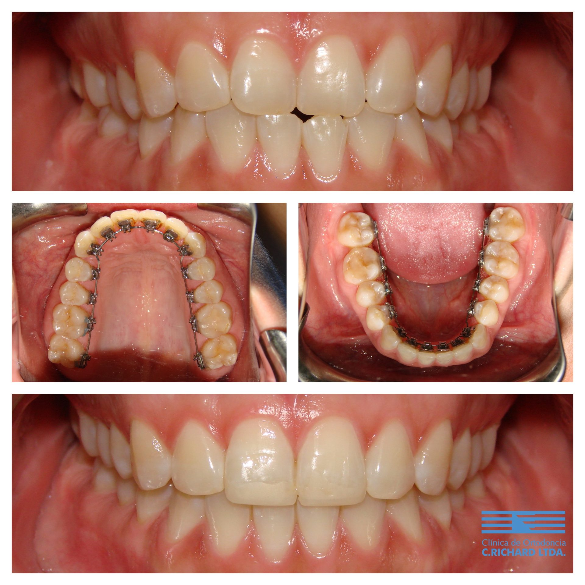

Ortodoncia lingual: brackets por dentro de los dientes
Revisado por Dr. Alberto Del Real V., ortodoncista · Registro Superintendencia de Salud N° 312378 · Actualizado en octubre de 2026
La ortodoncia lingual usa brackets pegados por la cara interna de los dientes, así que no se ven al hablar ni al sonreír. Es una alternativa fija y estética para adultos y adolescentes que no quieren aparatos visibles y prefieren no depender de usar alineadores todo el día. Requiere un ortodoncista con entrenamiento específico en la técnica.

Para quién es
Para quien necesita un tratamiento completo con aparatos fijos pero no quiere que se noten: profesionales, personas que hablan en público o pacientes que ya probaron alineadores y prefieren algo fijo. Se define en la evaluación si el caso es adecuado para esta técnica.
Adaptación
Las primeras una o dos semanas la lengua roza los brackets y puede alterar levemente la pronunciación de algunas letras. Es transitorio: la lengua se acostumbra rápido. Los controles son similares a los de los brackets convencionales.
Otras opciones estéticas
Si la ortodoncia lingual no es la indicada, existen los alineadores invisibles y los brackets estéticos de cerámica.
Quién te atiende
Ortodoncistas especialistas, miembros de la AAO, la WFO y la Sociedad de Ortodoncia de Chile:


Preguntas frecuentes
¿Se notan los brackets linguales?
No desde afuera: van pegados por la cara interna de los dientes.
¿La ortodoncia lingual afecta el habla?
Durante las primeras una o dos semanas puede cambiar levemente la pronunciación de algunas letras. Luego la lengua se adapta.
¿Es más cara que los brackets tradicionales?
Sí, suele serlo, porque los aparatos son personalizados y la técnica es más compleja. El valor de cada caso se entrega en la evaluación.